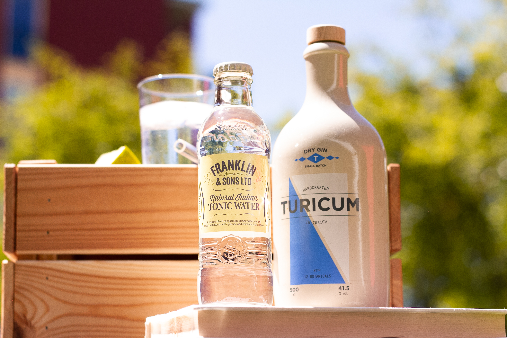

Eine Empfehlung von uns
Sieht das Tonic verlockend aus, aber du weisst nicht wozu es gut passt? Wir empfehlen dir einen regionalen Gin! Edel im Geschmack und klar in der Farbe verkörpert der Turicum Gin sogar ein stück zürcher Geschichte.